Jìng.The Path
A place to pass through.
A reason to stay.
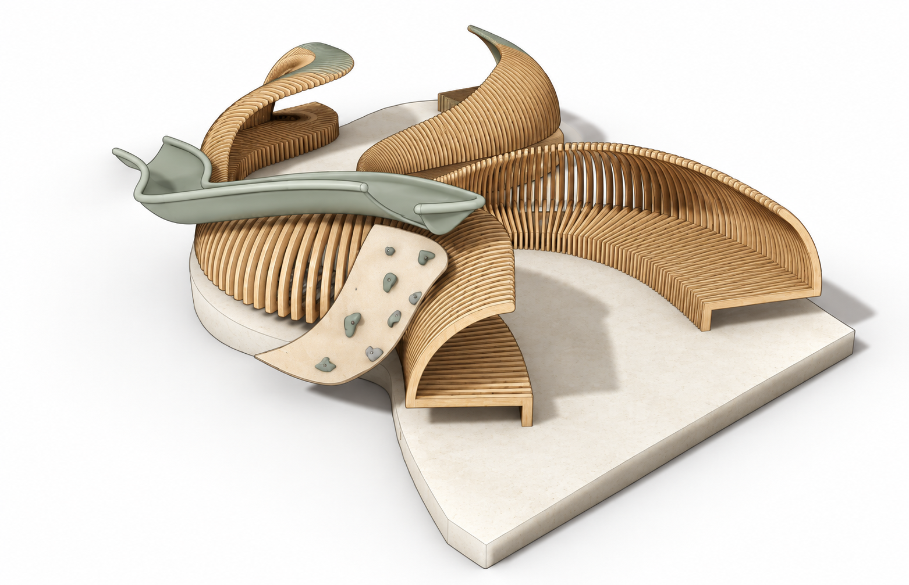
Reimagining a campus lawn as a place to rest, study and connect — shaped by the people who use it.
- Context
- Queen’s Lawn & Dangoor Plaza
Imperial College London - Team project
- Bdobe Outdesign
Cici Song & collaborators - Scope / 2025
- Field research · Co-design
Physical prototypes · CAD proposal
01 / BRING THE SYSTEM TOGETHER
The proposal:
shelter, seating and play.
Explore the CAD proposal by day, night and site context, then follow the research and co-design behind its curved landscape and modular seats.
HOW THE DESIGN RESPONDS
01 Shelter & dry ground
Wet-ground feedback led to flooring and drainage, with sheltered and open areas.
02 Study & social use
Modular seats and tables fit different groups; curved boundaries define connected gathering spaces.
03 Play & campus identity
A slide, climbing wall and display surfaces bring play and campus identity into the space.
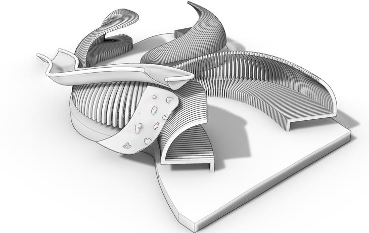
Made for outdoor use.
Recycled plastic composite seats and polycarbonate glazing replace the earlier teak and HDPE direction.
- Seat height
- 0.4 m
- Curved side wall
- 0.5–2.0 m
- Slide / climbing element
- 2.2 m
Summer report: specifications p. 9, renders p. 10. The full installation is a CAD proposal, not a built structure.
02 / UNDERSTAND EVERYDAY CAMPUS LIFE
Research:
why people don’t stay.
This route between teaching spaces and the library has limited seating, muddy ground and weather-dependent use.
Discovery report, pp. 3, 9–10. Interviews included 10 students, 3 maintenance staff and 1 professor.
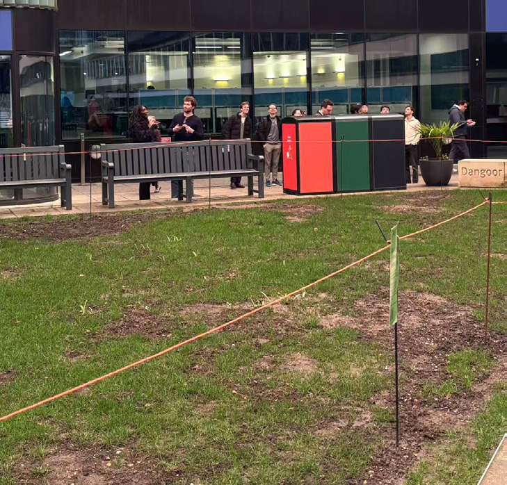
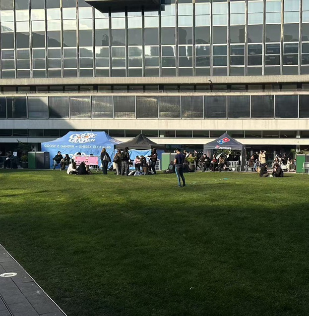
FROM OBSERVATIONS TO DESIGN NEEDS
01 Make staying comfortable
Improvised seats and eating surfaces showed a need for usable seating and tables.
02 Offer a choice of conditions
Mud, rain and seasonal shade called for dry surfaces, shelter, sun and shade choices.
03 Support different social needs
Movable seating should accommodate quiet rest, study and group conversation.
Seasonal
shadow studies.
Compare four months at the same time of day to see how sunlight changes across the site.
Longer winter shadows reinforce the need for comfortable alternatives to sitting on the grass.
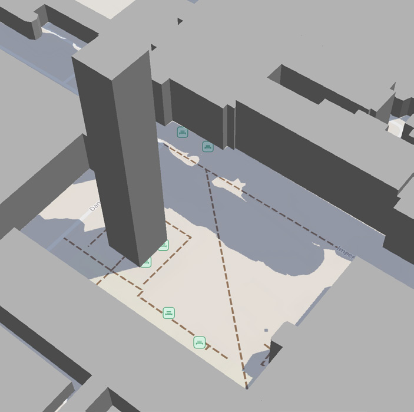
03 / TURN INSIGHTS INTO A DIRECTION
Concept selection
& the move to a lower path.
Fifteen ideas became three concepts. HoloHub led early ideation; the later review favoured The Path for feasibility and shared spatial use.
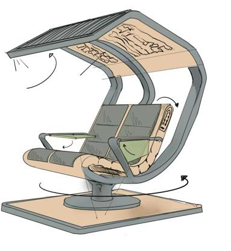
A compact place to pause.
A rotating bench combines an adjustable backrest, folding table and charging. Flexible, but limited as a shared spatial intervention.
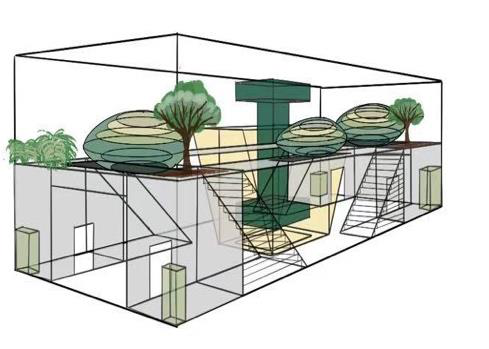
An enclosed social destination.
A glass house combines seating, greenery and shared facilities. Later review raised cost and system-complexity concerns.
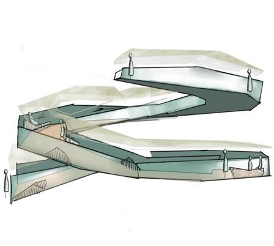
A structure for movement and rest.
Seating, partial shelter and spatial identity supported selection. Feedback then prompted a lower, more practical form.
Selection scores, 1–5: summer report p. 4. These are project judgements, not measured performance.
An elevated
spiral staircase.
Seating, views and a distinctive campus landmark.
A lower path.
More connection.
Feedback on height and social separation led to lower seating and shelter.
04 / BUILD, INVOLVE, REVISE
Co-design:
space and seating.
Scale models tested spatial relationships. A 3D-printed seat explored form and modularity; a full-size cardboard prototype tested use and comfort.
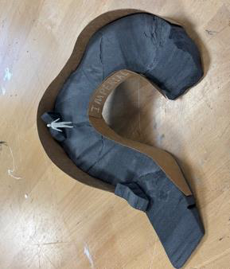
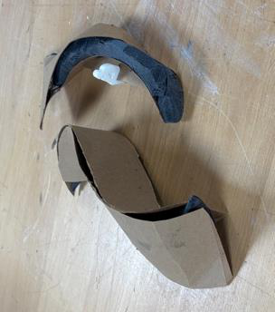
Preferred the path.
The path balanced privacy and connection; the elevated loop felt disconnected from people below.
Summer report, p. 8 / preference within the workshop group.
The useful part was modularity.
The hinge was optional.
Eleven students and one professor tested the models and seat. Feedback favoured separable modules over folding.
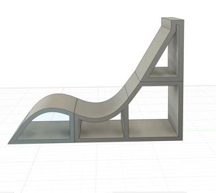
Modelled from the original prototype photos and CAD views. Proportions and transitions are illustrative.
9 / 12 did not need folding.
A detachable upper section replaced the folding direction.
12 / 12 reported comfort.
Small-group prototype feedback; not general ergonomic validation.
Support, power, flexibility.
Head-support connection, a charging socket and solar-powered charging were explored in the revised seating concept.
Model reference: report pp. 6–7 / 3D-printed study and full-scale cardboard configurations.
Seat findings: summer report pp. 6–7. One-, two- and three-person arrangements are prototype demonstrations.
05 / WHAT THE PROCESS CHANGED
Next: test
a full-scale installation.
Before building, evaluate structure, accessibility, outdoor durability, drainage and everyday use.
Bdobe Outdesign · Simon Xia, Yuxuan Zhou, Cici Song, Ziqi Zhou & Simon Wang.
Spring 2025 discovery and Summer 2025 final reports; team credit follows the latter.